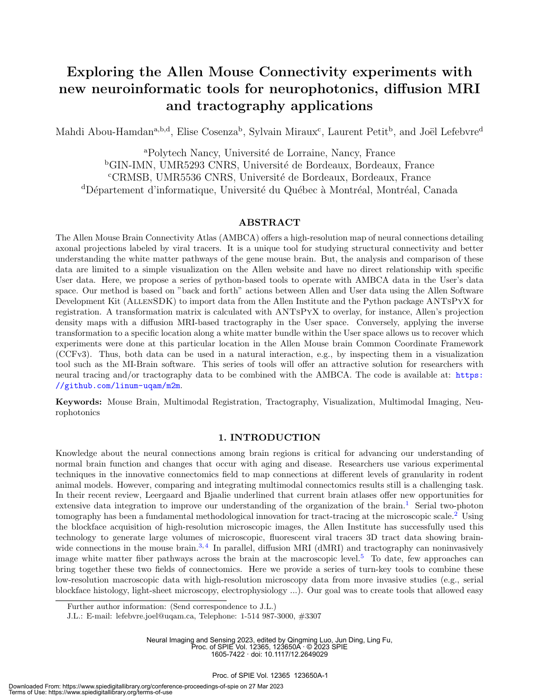
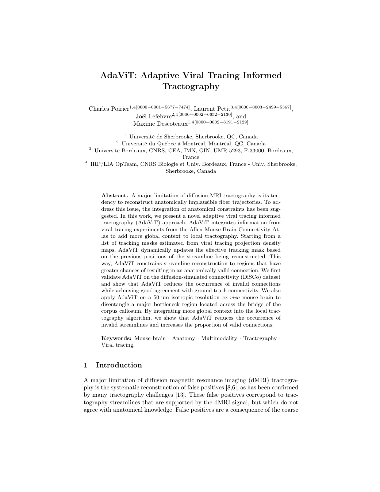
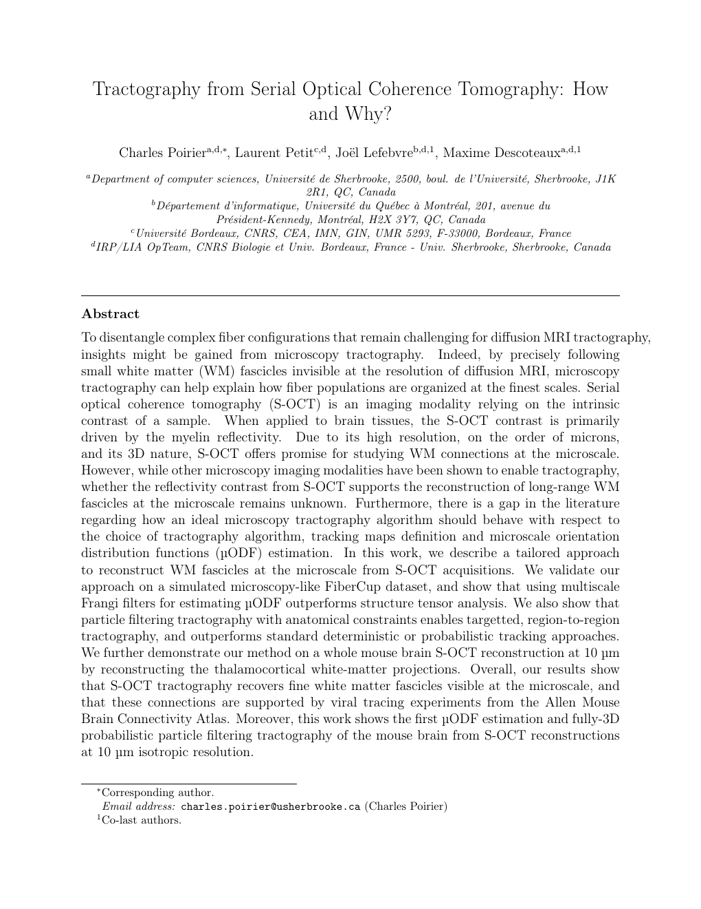
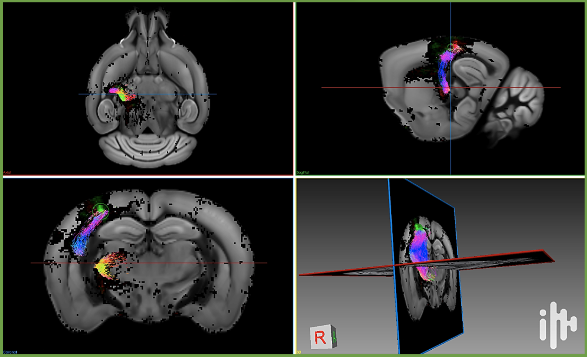
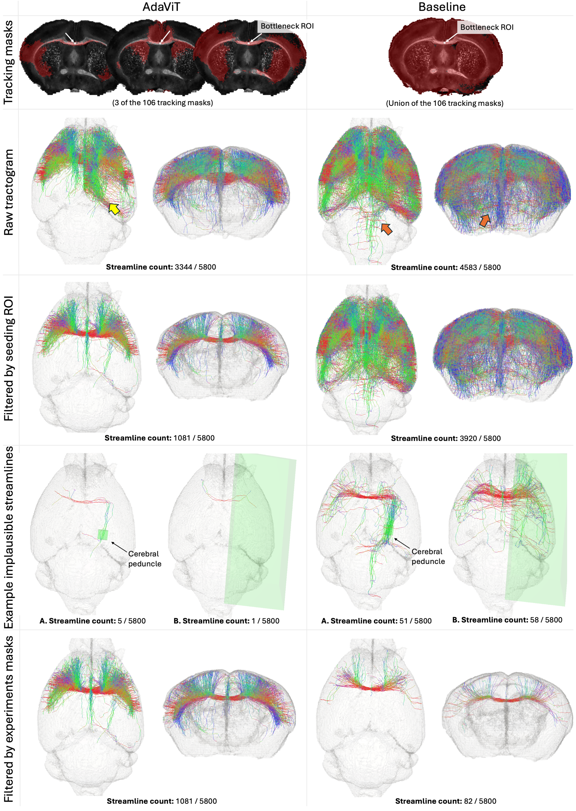
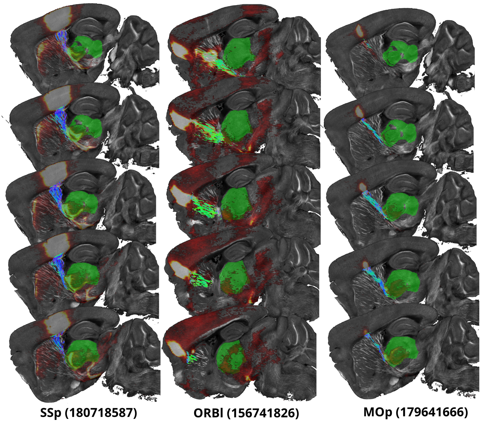

From using microscopy to validate tractography
to making tractography directly from microscopy.
De la microscopie pour valider la tractographie
à une tractographie directement issue de la microscopie.
µTracto follows the maturation of one idea: make anatomical evidence interoperable with tractography, inject that evidence into the tracking algorithm itself, then extend tractography beyond diffusion MRI to microscopic structural imaging.
µTracto retrace la maturation d’une même idée : rendre l’information anatomique interopérable avec la tractographie, l’injecter au cœur de l’algorithme de tracking, puis étendre la tractographie au-delà de l’IRM de diffusion vers une imagerie structurale microscopique.

m2m
Allen tracing ↔ neuroimaging and tractography
Traçage Allen ↔ neuroimagerie et tractographie

AdaViT
Viral tracing → anatomically informed dMRI tractography
Traçage viral → tractographie IRMd informée par l’anatomie

S-OCT tractography
Microscopy → tractography
Microscopie → tractographie
CROSS-TRACTS
How can the real topology of white-matter fiber crossings be measured and used to make tractography more anatomically grounded?
Comment mesurer la topologie réelle des croisements de fibres de la substance blanche et l’utiliser pour rendre la tractographie plus fidèle à l’anatomie ?
Bring viral tracing and tractography into the same anatomical space.
Réunir traçage viral et tractographie dans un même espace anatomique.

m2m creates the missing bridge between mesoscale viral tracing and individual neuroimaging. Allen projection maps can be transferred into the subject’s native space and directly overlaid with tractography. Independent anatomical evidence therefore becomes operational within the same environment as the reconstructed pathways.
m2m crée le pont manquant entre le traçage viral à l’échelle mésoscopique et la neuroimagerie individuelle. Les cartes de projections Allen peuvent être transférées dans l’espace natif du sujet et directement superposées à la tractographie. Une information anatomique indépendante devient ainsi exploitable dans le même environnement que les trajectoires reconstruites.
Anatomical evidence can prevent tractography from taking the wrong path.
L’information anatomique peut empêcher la tractographie de prendre une mauvaise trajectoire.

AdaViT turns anatomical ground truth into an active tracking constraint. During dMRI tractography, Allen viral-tracing projections dynamically restrict where a streamline can propagate. In a real corpus-callosum bottleneck, this produces cleaner transcallosal trajectories and strongly reduces anatomically implausible streamlines compared with conventional probabilistic tractography.
AdaViT transforme la vérité terrain anatomique en contrainte active de tracking. Pendant la tractographie IRMd, les projections issues du traçage viral Allen restreignent dynamiquement les régions dans lesquelles une streamline peut se propager. Dans un bottleneck réel du corps calleux, cela produit des trajectoires transcallosales plus propres et réduit fortement les streamlines anatomiquement implausibles par rapport à une tractographie probabiliste conventionnelle.
What if tractography no longer needed diffusion MRI?
Et si la tractographie n’avait plus besoin de l’IRM de diffusion ?

Here, tractography leaves diffusion MRI altogether. Fiber orientations measured directly from 10-µm isotropic S-OCT microscopy are used to reconstruct three-dimensional white-matter trajectories. The resulting thalamocortical pathways reproduce independent Allen viral-tracing experiments: microscopy is no longer only a validation tool — it becomes the imaging substrate for tractography itself.
Ici, la tractographie quitte complètement l’IRM de diffusion. Les orientations des fibres mesurées directement par microscopie S-OCT isotrope à 10 µm servent à reconstruire des trajectoires tridimensionnelles de substance blanche. Les projections thalamo-corticales obtenues reproduisent des expériences indépendantes de traçage viral Allen : la microscopie n’est plus seulement un outil de validation — elle devient le support d’imagerie de la tractographie elle-même.